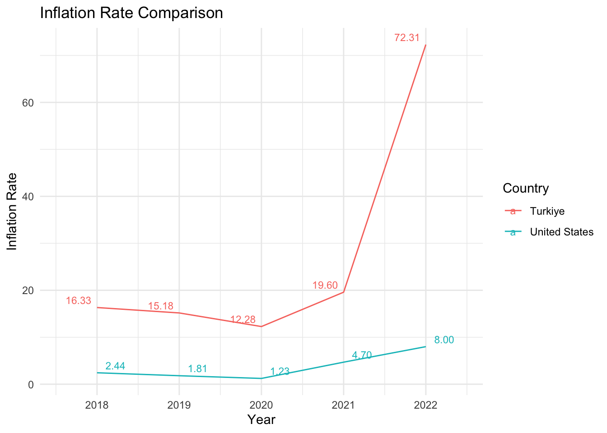
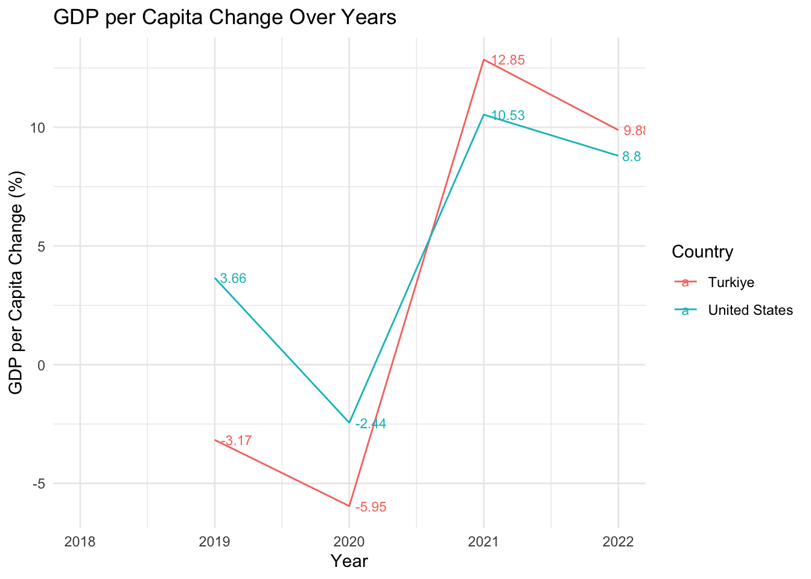
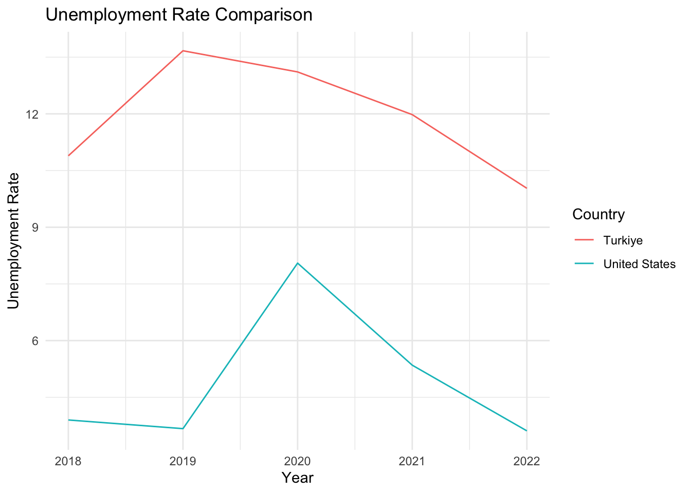
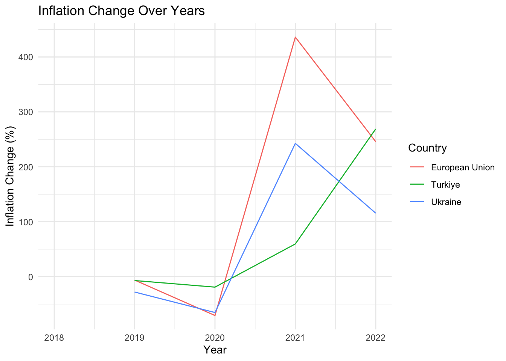
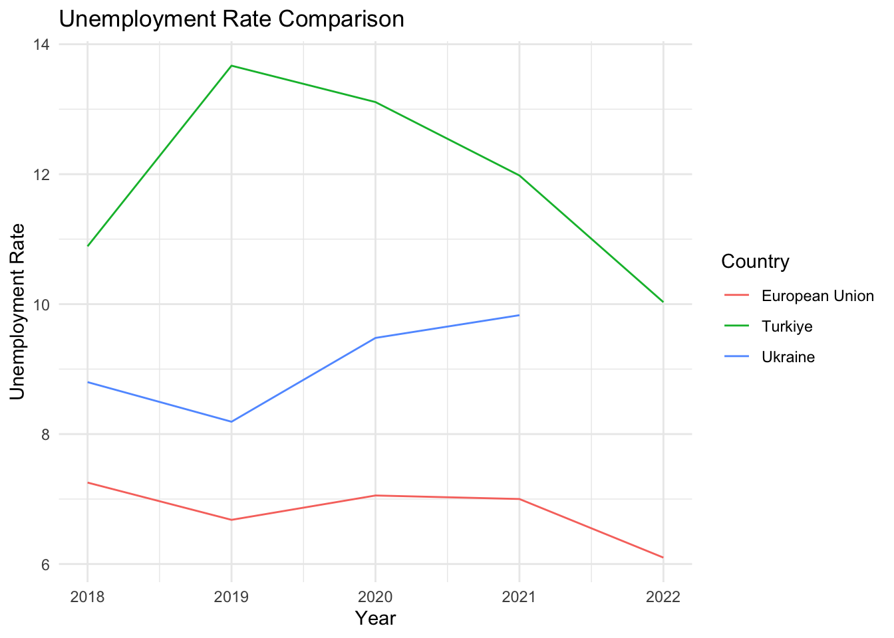
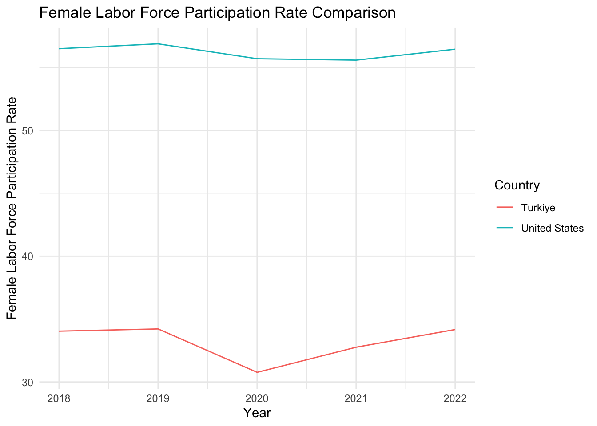
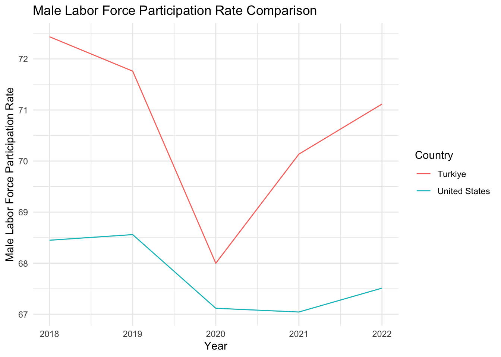
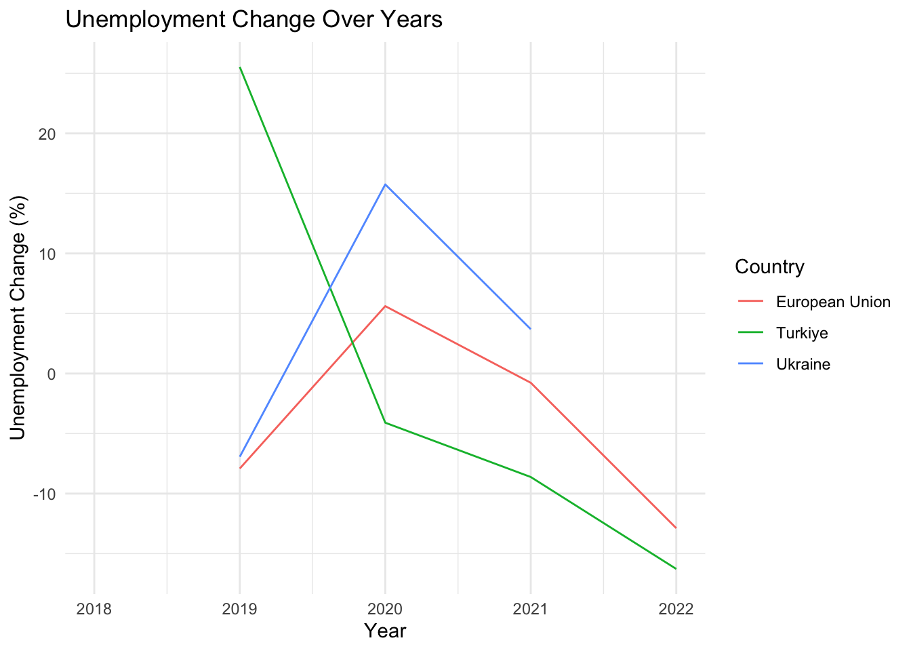
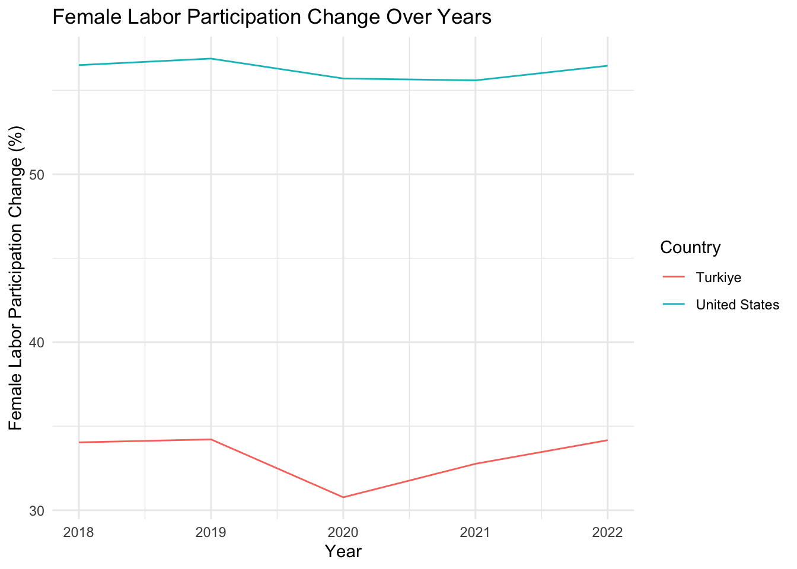

Code
library(gt)
library(knitr)
library(kableExtra)library(gt)
library(knitr)
library(kableExtra)In this Exploratory Data Analysis (EDA), we focused on the years 2018 to 2023, we conducted a comparative analysis between two countries, Ukraine and Turkey, both aspiring to become candidates for the European Union. Utilizing key indicators such as total population, GDP per capita, age dependency ratio, inflation, unemployment rate, and gender-specific labor force participation rates, we aimed to evaluate and contrast the socio-economic landscapes of these nations. The data collected from the World Bank allows us to gain insights into the demographic structure, economic performance, and labor dynamics, providing a comprehensive overview of the key factors influencing their candidacy for EU membership. This analysis will contribute to a deeper understanding of the current state and potential trajectories of Ukraine and Turkey in their pursuit of EU accession.
The libraries used in our analysis are given below:
The data set used in our analysis is given below:
world_bank_data <- readRDS("world_bank_data.rds")
options(max.print = 15)
kable(world_bank_data, "html") %>% kable_styling()| Country | Year | Population | GdpPerCapita | AgeDependancyRatio | Inflation | UnemploymentRate | FemaleLaborRate | MaleLaborRate |
|---|---|---|---|---|---|---|---|---|
| European Union | 2018 | 447001100 | 35751.573 | 54.66621 | 1.7386086 | 7.253803 | 51.06276 | 63.84818 |
| European Union | 2019 | 447367191 | 35079.534 | 55.29177 | 1.6305226 | 6.679810 | 51.26601 | 63.91365 |
| European Union | 2020 | 447692315 | 34356.575 | 55.86259 | 0.4764989 | 7.054819 | 50.50284 | 63.01832 |
| European Union | 2021 | 447178112 | 38721.763 | 56.34923 | 2.5545070 | 7.000430 | 51.13162 | 63.14634 |
| European Union | 2022 | 447370510 | 37432.560 | 56.57327 | 8.8336989 | 6.098751 | 51.88009 | 63.83574 |
| Turkiye | 2018 | 81407204 | 9568.836 | 46.30621 | 16.3324639 | 10.890000 | 34.03700 | 72.43400 |
| Turkiye | 2019 | 82579440 | 9215.441 | 46.74186 | 15.1768216 | 13.670000 | 34.21500 | 71.76100 |
| Turkiye | 2020 | 83384680 | 8638.739 | 46.82812 | 12.2789574 | 13.110000 | 30.76700 | 67.99800 |
| Turkiye | 2021 | 84147318 | 9743.213 | 46.75508 | 19.5964927 | 11.980000 | 32.76200 | 70.13500 |
| Turkiye | 2022 | 84979913 | 10674.504 | 46.77459 | 72.3088360 | 10.030000 | 34.16700 | 71.11600 |
| Ukraine | 2018 | 44622518 | 3096.562 | 47.21927 | 10.9518559 | 8.800000 | 49.54200 | 64.46000 |
| Ukraine | 2019 | 44386203 | 3661.458 | 47.75787 | 7.8867175 | 8.190000 | 49.26000 | 64.81700 |
| Ukraine | 2020 | 44132049 | 3751.737 | 48.18610 | 2.7324921 | 9.480000 | 48.15100 | 63.44800 |
| Ukraine | 2021 | 43822901 | 4827.846 | 48.41627 | 9.3631392 | 9.830000 | 47.79100 | 62.89700 |
| Ukraine | 2022 | 38000000 | 4533.976 | 52.05497 | 20.1836367 | NA | NA | NA |
While the European Union’s population remains stable, Turkey demonstrates a steady increase, and Ukraine experiences fluctuations with a notable decline in 2022.
library(ggplot2)
library(scales)
library(dplyr)
The GDP per Capita Comparison graph highlights distinct economic trends for each country/region. The European Union faced a modest decline, Turkey experienced fluctuations with an increase in 2022, and Ukraine showed growth until 2021, with decreasing trend in 2022.

The Age Dependency Ratio in the European Union increased slightly, Turkey’s ratio remains quite stable. Ukraine experienced a dramatic increase in 2022, suggesting changes in the demographic structure.

The graph depicts the inflation rates for three different countries/regions over the years 2018 to 2022: European Union, Turkey, and Ukraine.
The European Union generally had lower inflation rates compared to Turkey and Ukraine, with some fluctuations.
Turkey experienced relatively higher and more volatile inflation rates, reaching a peak in 2022.
Ukraine, in contrast, had a decreasing trend in inflation.
All of them has increasing trend after 2020 and reaching the highest rate in 2022.

The European Union generally experienced moderate inflation and unemployment rates.
Turkey faced higher inflation rates and initially high but decreasing unemployment rates.
Ukraine showed more significant fluctuations in both inflation and unemployment rates, with a notable increase in inflation in 2021. It’s important to note that the provided data has missing values (NA), especially in the case of Ukraine’s unemployment rate for 2022.

The European Union maintained relatively low inflation (0.48% to 2.55%) but saw a modest decline in GDP per capita.
Turkey experienced higher inflation, peaking at 19.60% in 2021, and a fluctuating GDP per capita.
Ukraine had varying inflation rates, notably increasing in 2022 (20.18%), with GDP per capita showing fluctuations. These trends highlight economic variations and challenges across the regions during the specified period.

Unemployment rates varied across the years for the European Union, Turkey, and Ukraine.
The European Union maintained relatively lower unemployment rates, ranging from 6.10% in 2022 to 7.25% in 2018.
Turkey saw a decline from 10.89% in 2018 to 10.03% in 2022.
Ukraine experienced fluctuations, notably increasing from 8.19% in 2019 to 20.18% in 2021.
Overall, the European Union consistently had lower unemployment rates compared to Turkey and Ukraine during the specified years.

The European Union consistently leads in both male and female labor force participation rates, while Turkey sees a notable gender gap with higher male participation. Ukraine shows a more balanced but lower overall participation compared to the EU.


The above analysis provides a snapshot of key socio-economic indicators for the European Union (EU), Turkey, and Ukraine over the years 2018 to 2022. In the EU, there is a gradual decrease in population alongside a decline in GDP per capita. Age dependency ratios are consistently high, indicating an aging population, while inflation and unemployment rates fluctuate. Female and male labor rates remain relatively stable.
For Turkey, the population shows a slight increase, but there is a noticeable drop in GDP per capita. Age dependency ratios and inflation rates vary, with a significant spike in 2022. Unemployment rates decrease over the period, and female and male labor rates exhibit moderate fluctuations.
In the case of Ukraine, the population decreases notably from 2018 to 2022, possibly due to recent geopolitical events. GDP per capita follows an upward trend, and age dependency ratios remain relatively stable. Inflation rates fluctuate, while unemployment rates decrease. It’s worth noting that data for 2022 is incomplete for Ukraine. Overall, these trends suggest varying economic and demographic dynamics across the three entities over the analyzed period.